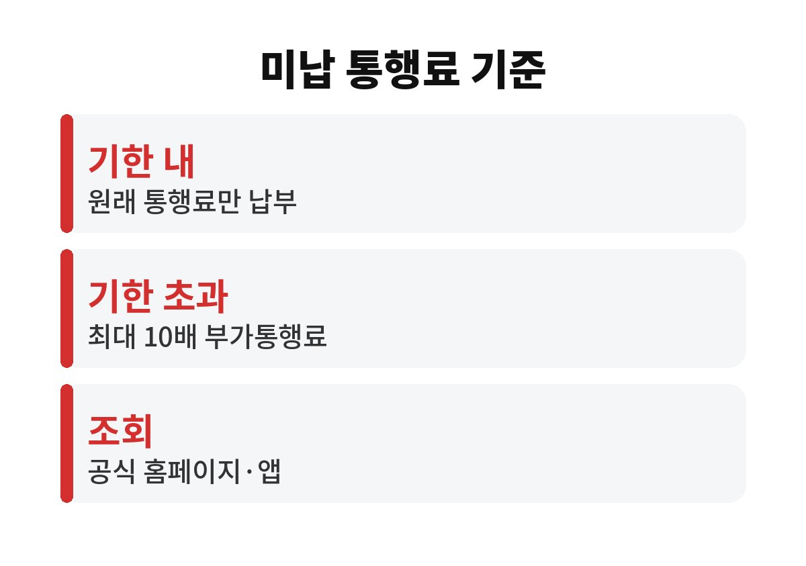
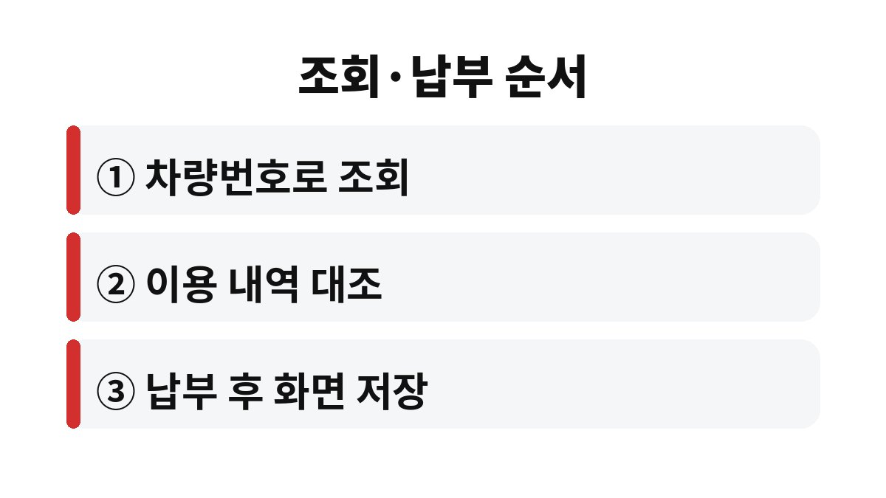

고속도로 미납 통행료는 한국도로공사 통행료 홈페이지나 공식 앱에서 차량번호로 조회할 수 있고, 안내받은 기한 안에 내면 원래 통행료만 내면 된다.
문제는 기한을 넘기고도 정당한 사유 없이 계속 내지 않을 때다.
이 경우 유료도로법에 따라 미납 금액의 최대 10배까지 부가통행료가 붙을 수 있다.
하이패스 차로를 지날 때 경고음이 울렸다면 카드 미삽입, 잔액 부족, 단말기 오류 가운데 하나일 가능성이 크다.
이때 차로 안에서 멈추거나 후진하면 뒤차와 부딪힐 위험이 훨씬 크다.
그대로 지나간 뒤 조회해서 내면 된다.
후불 하이패스 카드도 유효기간이 지났거나 결제 계좌에 문제가 생기면 미납이 쌓인다.
고속도로 미납 통행료는 이렇게 단말기 쪽 사소한 문제에서 시작되는 경우가 대부분이다.
렌터카나 회사 차량은 안내가 차량 소유자에게 가기 때문에 실제 운전자는 한참 뒤에야 알게 되는 일이 많다.
이사 후 차량 등록 주소를 바꾸지 않았다면 우편 안내를 못 받을 수도 있다.
그래서 고속도로를 자주 탄다면 안내를 기다리지 말고 직접 조회해 두는 편이 마음 편하다.
중고차를 산 직후라면 이전 소유자의 미납 내역과 섞이지 않게 이용 날짜부터 본다.
미납 통행료는 처음부터 큰돈이 되는 구조가 아니다.
우편이나 모바일로 납부 안내를 받고, 그 기한 안에 내면 원래 금액만 낸다.
부가통행료는 안내를 받고도 기한을 계속 넘긴 경우에 붙는다.
한 건이 몇천 원이라도 10배가 되면 부담이 확 커진다.
나는 납부 안내 문자를 스팸으로 착각하기 쉽다고 본다.
문자 속 링크를 누르기보다 공식 홈페이지나 앱에 직접 들어가 같은 내역이 있는지 맞춰 보는 쪽이 안전하다.
| 단계 | 내는 금액 | 확인할 점 |
|---|---|---|
| 미납 직후 | 원래 통행료 | 홈페이지·앱에서 조회 후 납부 |
| 납부 안내를 받은 뒤 | 원래 통행료 | 안내문에 적힌 납부기한 |
| 기한을 계속 넘김 | 최대 10배 부가통행료 | 정당한 사유 없는 미납이 대상 |

고속도로 미납 통행료를 조회할 때 휴대전화 본인인증을 요구하는 경우가 있으니 명의자 휴대전화를 옆에 두면 편하다.
인터넷 납부가 어렵다면 고속도로 영업소에서도 낼 수 있다.
한 번에 여러 건이 조회되면 날짜순으로 하나씩 대조하는 편이 빠르다.
카드 결제 문자에 고속도로 통행료가 찍히지 않은 날이 있다면 그 구간이 미납일 가능성이 있다.
납부 완료 화면은 나중에 같은 건으로 다시 안내가 왔을 때 근거가 된다.

하이패스 카드 잔액이 넉넉해도 카드가 단말기에 제대로 꽂히지 않으면 결제가 안 된다.
단말기 화면에 카드 인식 표시가 뜨는지 출발 전에 한 번 보면 된다.
고속도로 미납 통행료가 잦은 차라면 단말기 자체 점검을 받아 보는 것도 방법이다.
미납 안내가 우편으로 오기까지는 시간이 걸린다.
그 사이 같은 이유로 미납이 몇 건 더 쌓이는 경우가 있다.
경고음을 들은 날 바로 조회하면 한 건으로 끝난다.
조회된 내역이 기억나지 않는다고 바로 이의를 제기하기보다 그날의 블랙박스 영상과 내비게이션 기록부터 맞춰 본다.
대부분은 잊고 있던 짧은 구간 이용이다.
조회된 차량번호나 차종이 내 차와 다르다면 번호판 오인식일 수 있다.
이럴 때는 한국도로공사 고객센터에 이용 일시와 영업소를 알려 정정을 요청하는 편이 빠르다.
회사 차량이라면 담당 부서가 미납 내역을 한꺼번에 조회하는 경우가 많으니 먼저 물어보면 된다.
다음 고속도로 이용 전에는 하이패스 카드 유효기간부터 확인한다.
참고 자료: 한국도로공사 「미납 통행료 조회·납부 안내」(2026년 11월 확인)
※ 2026년 기준 공공기관 안내를 바탕으로 정리한 글이며, 차종과 연식에 따라 기준이 다를 수 있어 차량 설명서와 공식 안내를 함께 확인하길 바란다.